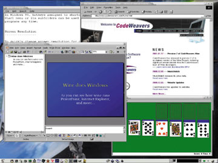

Мария Сысойкина
Проблема миграции
Наверное, уже ни для кого не секрет, что Linux в последние год-два все более уверенно занимает положение операционной системы для настольных компьютеров. Этому способствуют несколько факторов, и прежде всего - развитие самой ОС, совершенствование графических оболочек и оконных менеджеров. К примеру, последняя версия популярной графической среды KDE 3.1 ничем не уступает графическому интерфейсу Windows, а по возможностям настройки и наличию качественных приложений во многом превосходит его. Далее, немаловажный для России фактор - хорошая локализация ряда зарубежных дистрибутивов Linux и поддержка в них многочисленных кодировок кириллицы, а также появление и развитие высококачественных отечественных дистрибутивов (ASPLinux, ALTLinux). Еще один существенный фактор, правда, пока еще не вышедший на передний план в России - бесплатность Linux (или по крайней мере относительно невысокая стоимость: пользователь платит только за техническую поддержку, но не за само ПО).
На технических, технологических и прочих чисто программных достоинствах Linux останавливаться не будем, отметим лишь, что их достаточно, чтобы эта ОС составила достойную конкуренцию Windows.
Переход на Linux в рамках целой компании или организации - это прежде всего решение, определяющее корпоративный стандарт. И каковы бы ни были преимущества использования открытого ПО, в такой ситуации необходимо учитывать и потенциальные сопутствующие сложности. А их может быть множество. Одна из них - это наличие приложений, уже используемых в работе, необходимость обеспечить совместимость с используемыми форматами данных, да и просто качество и удобство использования этих приложений. В общем случае при переходе с одной платформы на другую можно выделить несколько этапов (причем вполне вероятно, что все они окажутся актуальными):
- Использование в работе на новой ОС существующих "родных" для нее аналогов привычных приложений.
- Использование эмуляторов для запуска на новой ОС приложений из старой.
- Работа с уже портированными идентичными приложениями или с приложениями, разработанными параллельно для двух систем.
- Самостоятельный перенос собственных разработок в среду новой ОС.
Рассмотрим варианты этих схем применительно к переходу на Linux.
Использование Linux-приложений
В этом случае вся проблема миграции сводится к тому, чтобы перенести на Linux все данные и освоить новые приложения. Что касается последнего, то здесь все просто. Современные Linux-приложения имеют вполне понятные и удобные графические интерфейсы, причем многие из них мало чем отличаются от аналогичных Windows-приложений. Так что разобраться будет несложно.
Что касается переноса данных, то здесь могут возникнуть проблемы. Если выбранное вами Linux-приложение понимает формат, в котором хранились данные в Windows, то сложностей не будет - разве что с кодировками. Впрочем, в последних русифицированных и тем более в отечественных дистрибутивах проблем с кириллицей нет.
Однако если применяется специфичный формат данных, который не воспринимается ни одним из соответствующих Linux-приложений, то придется либо конвертировать данные перед переносом, либо использовать другие пути. Один из таких путей - эмуляция приложений, но это тоже не панацея.
Эмуляторы
Если говорить об эмуляции Windows-приложений в Linux или же о загрузке всей ОС Windows в среде Linux, вполне логично задаться вопросом - а какой в этой затее смысл, если мы переходим на Linux только для того, чтобы не работать в Windows?
Возможно, если вы решите ограничиться только запуском отдельных Windows-приложений в среде XWindow, то такая эмуляция будет иметь определенный смысл. Ну, допустим, не существует пока Linux-аналогов многих узкоспециальных приложений, а работать надо. В этом случае эмуляция работы конкретного приложения может оказаться единственным выходом. Однако вполне возможно, что запустить его таким образом не удастся.
Существует ряд пакетов, позволяющих создавать виртуальные машины - запускать в Linux уже установленную ранее на компьютере ОС Windows. Рассматривая вариант полного перехода компании или предприятия на использование Linux, я в такой эмуляции особого смысла не вижу. Во-первых, за использование Windows все равно придется платить, во-вторых, вряд ли служба техподдержки будет разбираться с тем, почему Windows не работает "из-под Linux". Да и вообще, к чему столько сложностей? Вариант сосуществования Windows и Linux оправдан в одном случае - когда вам приходится одновременно работать с обеими системами. Но если вы все-таки полностью переходите на Linux, то вряд ли вам понадобится эмулировать Windows целиком. Диски, отформатированные под FAT и NTFS, прекрасно "видны" и в Linux, протоколы работы с сетями Microsoft в Linux также имеются, а чтобы перенести в Linux нужную информацию со старой системы, вам вряд ли что-либо еще понадобится. И тем не менее рассказать обо всех возможностях эмуляции стоит.
Итак, существуют два способа работы Windows-приложений в Linux. Первый - это запуск отдельных приложений в XWindow, а второй - создание виртуальных машин для эмуляции выполнения в Linux ранее установленной на компьютере ОС Windows.
Запуск Windows-приложений в XWindow
Из существующих на сегодня средств запуска в Linux Windows-приложений можно отметить библиотеки Wine и WineX, а также сравнительно недавнюю разработку Crossover Office компании CodeWeavers (http://www.codeweavers.com).
Начну с самой известной программы, Wine. Расшифровывается ее название как Wine Is Not Emulator (Wine - это не эмулятор). Данный рекурсивный акроним справедлив: Wine и в самом деле не эмулятор. Это средство реализует некий промежуточный уровень совместимости приложений - функционирование Win32 и Win16 API на базе XWindow и Unix/Linux.
В состав Wine входят библиотеки разработчика (Winelib), предназначенные для переноса Windows-приложений в Linux, а также загрузчик программ, позволяющий многим исходным приложениям Windows 3.x/9x/NT/2000/XP выполняться на Unix-платформах, включая Linux и FreeBSD.
Wine не создает виртуальных машин, а поэтому не требует наличия самой Windows. На программном уровне этот инструмент представляет собой полностью альтернативный код, не имеющий ничего унаследованного от Microsoft. Однако при необходимости он может использовать в работе доступные библиотеки Windows DLL. Wine распространяется как продукт Open Source. Его новейшие версии можно найти по адресу http://www.winehq.org.
Вы можете установить и использовать Wine как при наличии на компьютере Windows, так и без этой системы. В любом случае сначала придется установить сам пакет Wine, затем правильно настроить его конфигурационный файл и только после этого пытаться либо запустить приложения уже имеющейся Windows (предварительно смонтировав соответствующий раздел), либо устанавливать Windows-приложения поверх "чистой" Linux.
|  | Рис. 1. Windows-приложения, запущенные с помощью Wine.
|
WineX - это коммерческая версия Wine, разрабатываемая компанией Transgaming (http://www.transgaming.com). Она ориентирована прежде всего на работу Windows-игр в Linux, а следовательно, на поддержку технологии DirectX.
Более серьезная и функциональная коммерческая версия Wine - пакет Crossover Office, изначально предназначавшийся для запуска в Linux офисных приложений Microsoft. Однако сейчас с помощью этого пакета в Linux можно работать со многими различными приложениями Windows.
Схема работы с Crossover Office такая же, как и с Wine. Сначала устанавливается и настраивается сам пакет, а затем устанавливаются необходимые Windows-программы. Однако для нормальной работы с офисными приложениями перед установкой Microsoft Office придется сначала найти и установить в системе необходимые шрифты в формате TTF.
После установки Windows-приложений в меню вашей графической оболочки появится раздел Programs, содержащий ссылки на установленные программы. В Crossover Office наряду с офисным пакетом запускаются и такие общеизвестные приложения, как Windows Multimedia Player, Adobe Photoshop, WinAmp, PageMaker и т. д.
Создание виртуальных машин
Виртуальный компьютер - специальная программа, имитирующая для других программ инородный физический компьютер. Пожалуй, самое выдающееся средство создания виртуальных машин - это пакет VMWare. В качестве монитора виртуального компьютера в Linux здесь используется окно графической оболочки X XWindow. Виртуальный компьютер "строится" из следующего набора виртуальных устройств:
- виртуальные жесткие диски IDE и SCSI, виртуальный дисковод CD-ROM;
- стандартный дисковод гибких дисков;
- контроллер жестких IDE-дисков Intel 82371 PCI Bus Master, поддерживающий два первичных (primary) и два вторичных (secondary) IDE-диска;
- адаптер SCSI-дисков, совместимый с BusLogic BT-958;
- стандартный графический PCI-адаптер, стандартная 101/102-клавишная клавиатура, PS/2-совместимая мышь;
- сетевая плата AMD PCNET Family Ethernet adapter (PCI-ISA);
- последовательные порты COM1 - COM4, параллельные порты LPT1, LPT2;
- звуковая плата, совместимая с Sound Blaster 16.
Очевидно, что этот набор виртуальных устройств может отличаться от физической конфигурации конкретного компьютера, на котором запускается виртуальная машина. Если эмулируемая ОС устанавливается непосредственно внутри виртуального компьютера, то в процессе установки все эти устройства определяются корректно. При включении виртуального компьютера вы даже можете зайти в меню настроек BIOS и изменить нужные параметры.
Однако при запущенной виртуальной машине на компьютере реально работают две ОС, и соответственно обе они одновременно занимают какое-то количество ресурсов. Именно поэтому VMWare предъявляет достаточно высокие требования к конфигурации компьютера (физического, а не виртуальной машины). Чем мощнее базовый компьютер, тем менее заметна разница в быстродействии реальной и виртуальной ОС.
Процедура установки и конфигурирования самого пакета VMWare несложна, особенно при наличии исходных текстов ядра системы и правильно указанного пути к файлам заголовков ядра. Отметим, что при изменении версии ядра Linux переустанавливать пакет VMWare не нужно. Достаточно лишь изменить конфигурационный сценарий и выполнить его. Сложности начинаются при формировании непосредственно виртуальной машины. Это достаточно утомительный процесс, однако для неопытных пользователей в системе предусмотрен мастер конфигурации.
После создания, подключения и конфигурирования всех необходимых устройств виртуального компьютера всю конфигурацию необходимо сохранить, а затем можно смело приступать к установке операционной системы. После установки ОС нужно инсталлировать также пакет дополнительных утилит VMware Tools, включающий дополнительные драйверы.
После всех установок вы сможете "включить" виртуальный компьютер и запустить вторую ОС одновременно с уже работающей базовой ОС Linux, под управлением которой продолжает работать физический компьютер.
Еще один, более простой механизм "виртуальных машин" - это программа Win4Lin. Она проще, чем VMWare, поскольку создавалась и оптимизировалась именно для работы с Windows в Linux. Такая специализация повысила надежность и быстродействие, снизив требования к ресурсам компьютера. Единственное "но" заключается в том, что помимо самого дистрибутива вам придется установить еще одно ядро (нужно будет выбрать именно такое, на каком в данный момент работает Linux.). В результате в системе будет два ядра, а в загрузчике lilo появится дополнительная опция, позволяющая загружать Linux именно с ядром, поддерживающим эмулятор.
После установки нужно будет опять-таки установить Windows и приложения. Число доступных приложений при этом достаточно велико. На сайте Win4Lin представлен лишь небольшой список, включающий такие приложения, как Microsoft Office, Internet Explorer, продукты Macromedia и Adobe.
| Рис. 2. Win4Lin и Windows-приложения в Linux.
|
Итак, разобравшись с эмуляцией Windows-приложений в Linux, еще раз подчеркнем, что этот способ не всегда удобен и применим, в особенности если говорить о принятии Linux в качестве корпоративного стандарта.
Что же делать, если переходить на Linux все-таки необходимо? Можно отложить в сторону "родные" Linux-приложения и эмуляторы и попытаться найти нужное ПО среди уже перенесенных на платформу Linux приложений.
Портирование приложений
В числе серьезных общеизвестных продуктов, имеющих свои Linux-версии, сегодня можно назвать СУБД Oracle, Interbase (Linux-версия называется FireBird), IBM DB2, а также пакеты Lotus Domino, Netscape, Adobe Acrobat, средство разработки Borland Kylix (Delphi и C++ для Linux) и т. д. Однако следует учесть, что многие из портированных приложений вовсе не бесплатны и не распространяются по лицензии GNU GPL.
Существует ряд популярных Windows-приложений, изначально создававшихся под Linux, в частности, Web-сервер Apache, браузер Mozilla, средство для работы с графикой Gimp. Тем не менее вполне возможно, что вы не найдете Linux-версии нужного вам приложения. Проблема состоит в том, что подавляющее большинство ПО для Windows - закрытые коммерческие проекты. Следовательно, правами на исходные тексты и их изменение владеют сами разработчики, и только они сами могут заниматься переносом приложения на другую платформу. В этом отношении ситуация с обратным переносом, из Linux в Windows, обстоит намного проще - приложения для Linux в массе своей распространяются по лицензии GPL с открытыми исходными кодами. Таким образом, рано или поздно находятся энтузиасты, компилирующие эти коды под Windows. К примеру, именно так на свет появился пакет Gimp для Windows - мощный бесплатный редактор растровой графики.
Но далеко не все компании-разработчики готовы создавать Linux-версии своих продуктов. Многое определяется сложностью переноса и его обоснованностью - окупятся ли затраты на портирование приложения в ходе его дальнейшего распространения? Сейчас ситуация напоминает замкнутый круг. Пользователи Linux испытывают недостаток нужного ПО, поэтому Linux развивается как персональная ОС не так активно, как хотелось бы. А разработчики этого ПО сомневаются в необходимости переноса приложений на Linux, потому что пользователей Linux-версий пока не так много.
Можно предположить, что скорее всего портированное приложение не будет бесплатным и открытым. Случаи распространения Linux-версий коммерческих приложений по лицензии GNU/GPL автору неизвестны.
Помимо "политических" вопросов, перед разработчиками встает ряд проблем технического характера. Сложность переноса каждого конкретного приложения зависит не только от его масштаба и количества затраченных человеко-часов, но прежде всего от того, насколько грамотно оно изначально написано. Если приложение тесно взаимодействует непосредственно с API Windows, использует различные системные вызовы, обращается к динамическим библиотекам и т. п., то сложности при переносе гарантированы. Кроме того, если приложение, например, взаимодействует с СУБД и сервером БД, то не факт, что аналогичные средства существуют в Linux. В этом случае придется заниматься еще и переделкой приложения под новое ядро БД.
Если же портируется приложение, написанное на чистом C/C++ или Java, то количество возникающих проблем сводится к минимуму. Останется переписать только те фрагменты приложений, где явно задействованы платформно-зависимые моменты - например, пути к файлам (в Linux отсутствует понятие диска, расширения файлов, различается регистр в именах файлов) или обращения к конфигурации системы (в Linux нет системного реестра, вместо него используются конфигурационные файлы и сценарии). Так что даже если приложение изначально было написано с минимальной зависимостью от Windows API, все равно "приятных мелочей" при переносе возникает немало, и отслеживание всех подобных моментов вручную - довольно долгое и сложное дело.
На этот случай существуют дополнительные средства поддержки миграции - приложения или пакеты, позволяющие при написании кода отслеживать фрагменты, зависящие от платформы. Пример такого пакета - Visual MainWin, созданная компанией MainSoft надстройка для Microsoft Visual Studio.
Visual MainWin - это полностью кросс-платформенное решение, значительно упрощающее разработку и внедрение приложений на платформах Linux и Unix, создаваемых в среде Microsoft Visual Studio. Кроме того, Visual MainWin содержит пакет интеграции с J2EE и полную поддержку XML.
В состав Visual MainWin 5 входят инструментарий SDK для разработки приложений и пакет Visual MainWin Runtime для внедрения приложений. Инструментарий Visual MainWin SDK встраивается в визуальную среду разработки Visual Studio. Он дополняет существующие в Visual Studio конфигурации сборки приложений, добавляя в список несколько Unix-платформ. При сборке приложения используется технология Remote Development Technology, которая разбивает этот процесс на отдельные операции (компиляция, компоновка и т. д.) и удаленно выполняет их на платформах Unix с использованием "родных" компиляторов C++ для Unix.
| Рис. 3. Компиляция приложения с использованием Visual MainWin.
|
Результаты такой сборки отображаются в среде Visual Studio, как и при работе с кодом, собираемым на локальной машине. При этом расширенный компилятор самостоятельно разрешает и исправляет несоответствия в синтаксисе исходных кодов и различия между компиляторами Microsoft Visual C++ и Unix C++.
Пакет Visual MainWin Runtime состоит из модуля Windows Runtime для Unix и базовых сервисов (Visual MainWin Core Services). Вместе они позволяют выполнять Windows-приложения в среде Unix. По утверждениям представителей MainSoft, приложения, перенос которых в обычных условиях занимает около полутора лет, с использованием Visual MainWin будут портированы на Linux в течение полугода.
Средства, облегчающие перенос приложений в Linux, существуют и для разработок, создаваемых в среде Delphi и Borland С++. В первую очередь здесь, конечно же, следует упомянуть пакет Borland Kylix, последняя версия которого объединяет в рамках одного проекта две интегрированные среды разработки - Delphi и C++ для Linux.
Приложения, созданные в Delphi для Windows, достаточно легко переносятся на Linux (при условии, что при разработке приложения не были задействованы напрямую вызовы Windows API). При этом немаловажную роль играет и то, что в Linux приложение будет компилироваться в практически идентичной среде (Kylix - полный аналог Delphi и по интерфейсу IDE, и по возможностям). Кроме того, и Delphi, и Kylix поддерживают одинаковый набор кросс-платформенных компонентов, из которых строится приложение. Компоненты эти написаны без использования Windows API. Вместо этого в их основу положены кросс-платформенные библиотеки Qt производства TrollTech.
Однако Linux сейчас все чаще используется в качестве персональной ОС, и поэтому следует больше внимания уделять именно кросс-платформенной разработке - иными словами, разработке приложений сразу для нескольких операционных систем. Если изначально грамотно подойти к проектированию приложения и его реализации, то подобная разработка будет не намного сложнее, чем написание платформно-зависимого приложения. Сущность кросс-платформенной разработки сводится к тому, что в приложении выделяются фрагменты кода, зависящие от конкретной платформы. Весь остальной код разрабатывается и пишется только один раз - он будет платформно-независимым и общим для всех версий. Платформно-зависимые фрагменты пишутся в отдельности для каждой ОС. Таким образом, код можно легко переписать для любой новой платформы или же добавить в общий код эти самые варианты фрагментов для новой платформы.
Этот подход реализован в продуктах Borland - Kylix и Delphi. Вы можете использовать один и тот же исходный код, но компилировать его для Windows в Delphi, а для Linux - в Kylix. При этом в библиотеках обеих сред заложены различные функции и константы, обеспечивающие легкость разработки. Например, чтобы не переписывать несколько раз участок кода, в котором происходит обращение к файлам, но при этом учесть особенности каждой системы (прямой слэш или обратный, буква, обозначающая диск, и т. д.), можно воспользоваться соответствующими константами - PathDelim, DriveDelim и PathSep. Далее компилятор сам подставит нужное значение в зависимости от того, для какой ОС компилируется код.
Если среда не позволяет обобщить код для обеих платформ, можно выделить отдельные участки кода, используя директивы компилятора [$IFDEF MSWINDOWS] и [$IFDEF LINUX]. В этом случае компилятор сам выберет, какой участок кода компилировать, а какой пропустить.
Еще одно средство кросс-платформенной разработки - уже упоминавшиеся библиотеки Qt и Qt API (инструментарий для создания приложений). Версии этих библиотек есть как для Windows, так и для Linux.
Подводя итог обсуждению проблем миграции приложений, можно сказать, что этих проблем может оказаться достаточно много, а единого, универсального решения для них не существует. Однако в большинстве случаев все же можно найти выход из положения и начать использовать Linux в повседневной работе.